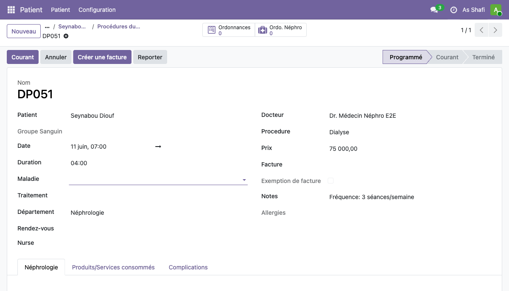
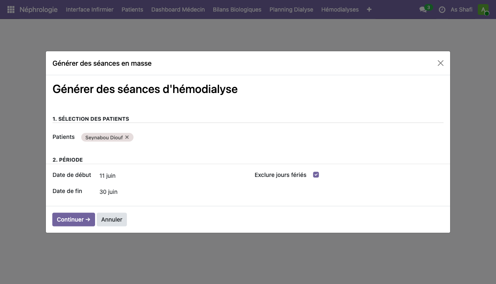
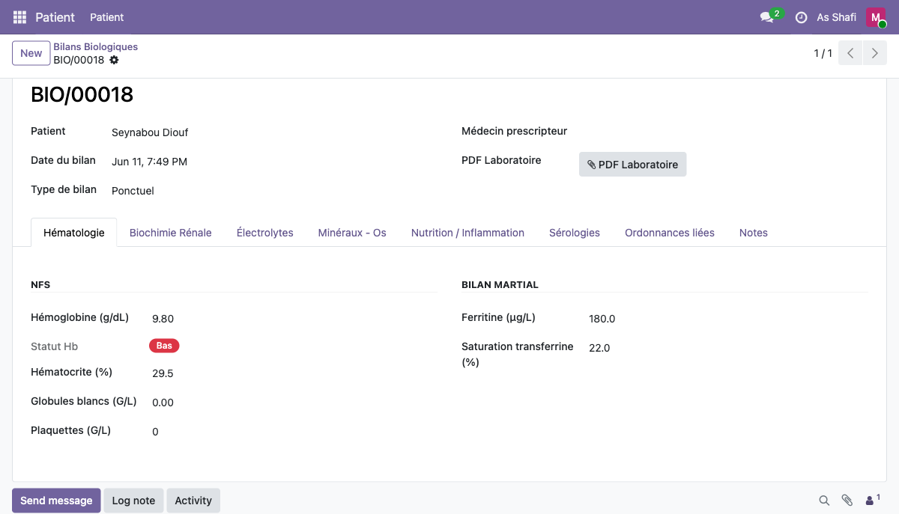
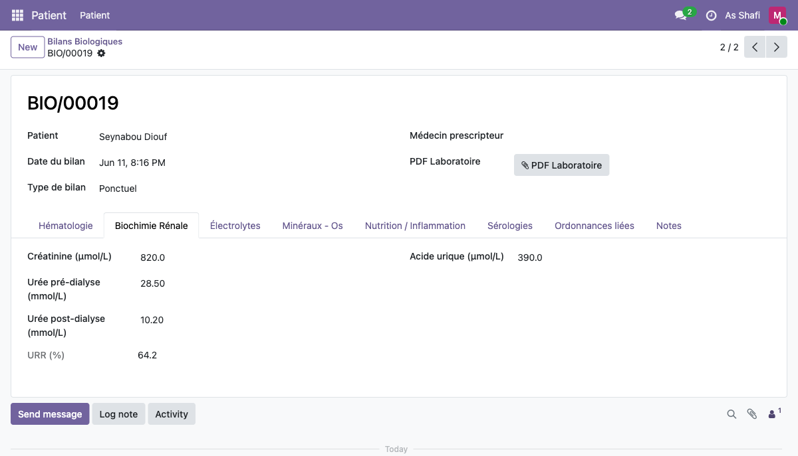
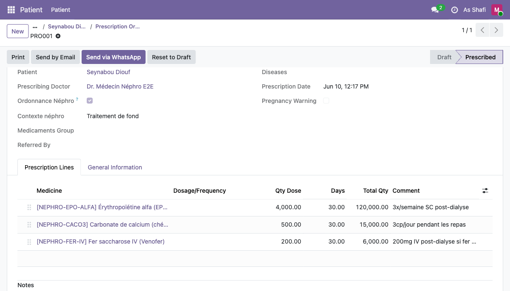
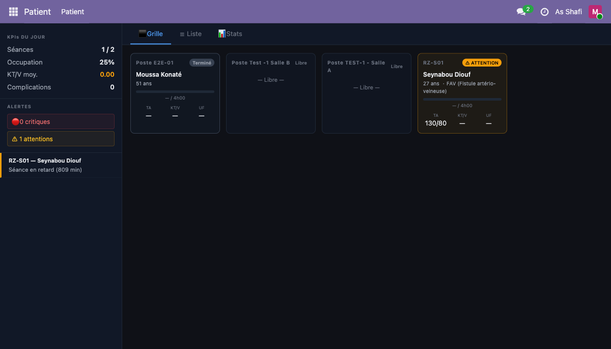
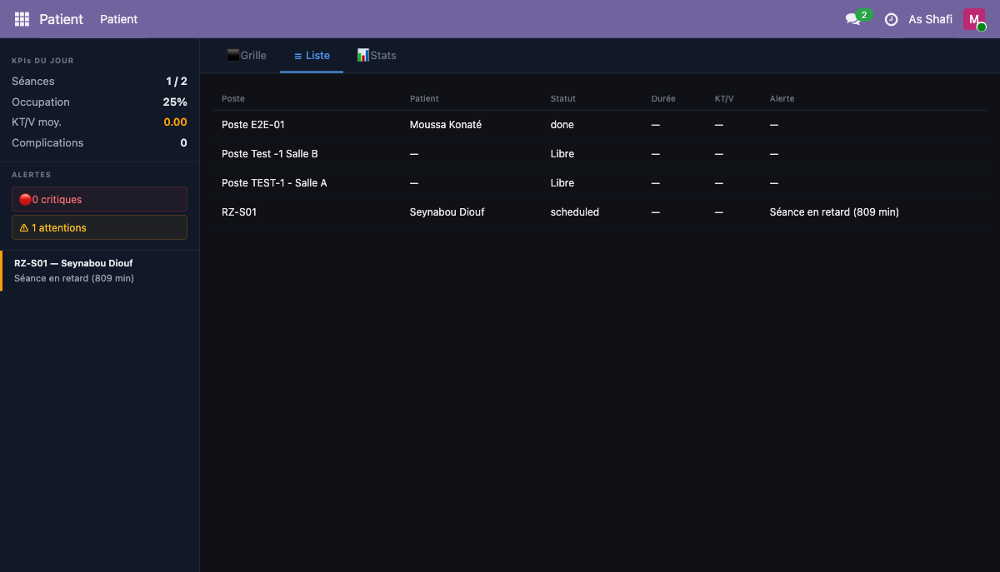
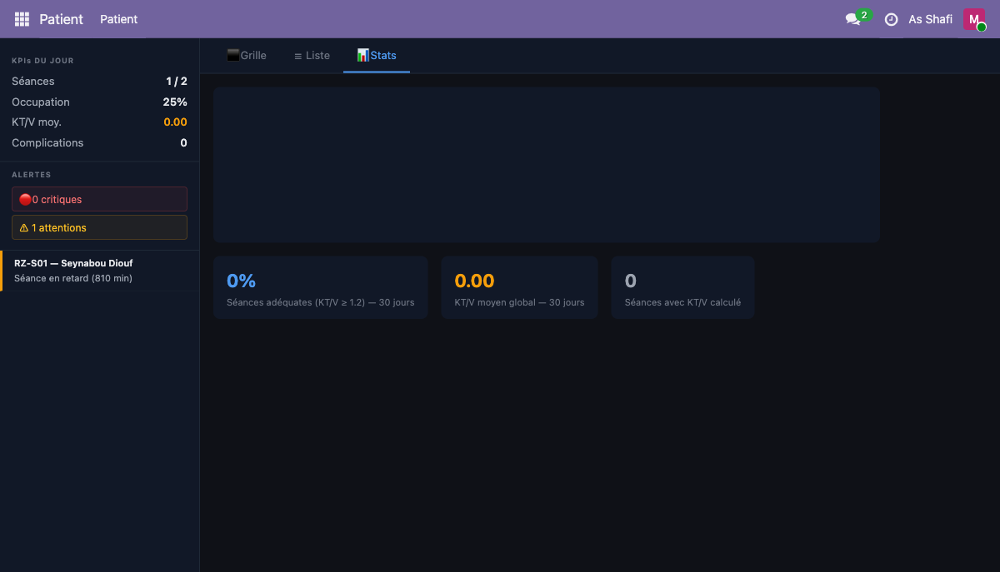
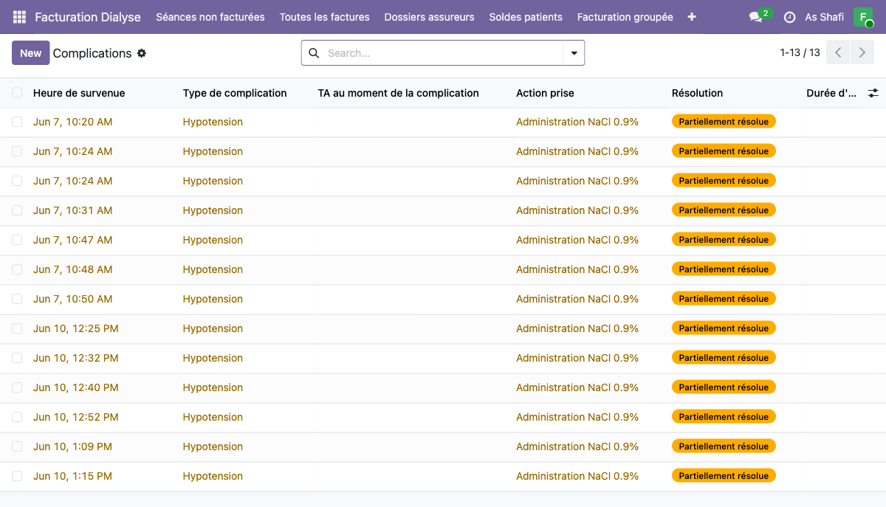
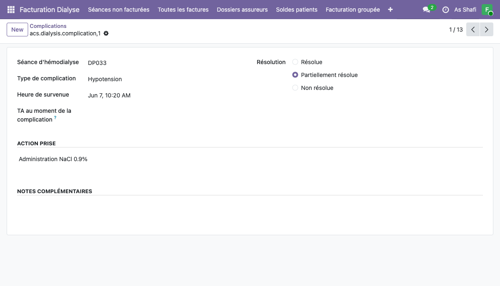

En tant que médecin néphrologue, vous prenez en charge le suivi clinique complet des patients hémodialysés. Vous prescrivez les séances d'hémodialyse, gérez les ordonnances médicamenteuses, interprétez les bilans biologiques pré- et post-dialyse, et pilotez l'activité du service via votre tableau de bord dédié.
Accès et navigation
Connectez-vous avec votre compte médecin depuis la page d'accueil Odoo. L'ensemble des fonctionnalités HMS Néphro est accessible depuis la barre de navigation principale.
-
1
Ouvrez votre navigateur et accédez à
http://localhost:8069/odoo -
2
Saisissez vos identifiants :
medecin@nephro.testetNephro2024!, puis cliquez sur Se connecter - 3 Dans la barre de navigation supérieure, cliquez sur le menu Patient
- 4 Dans le sous-menu déroulant, sélectionnez Patient — la liste complète des patients s'affiche
- 5 Utilisez la barre de recherche pour filtrer par nom, ID HMS ou statut, puis cliquez sur un patient pour ouvrir son dossier
Dossier patient — Prescription hémodialyse
La prescription d'hémodialyse est le document médical central qui définit les paramètres techniques de chaque séance pour le patient. Elle est créée depuis le dossier patient via le smart button Procédures en haut du formulaire.
-
1
Depuis la liste patients, ouvrez le dossier de Seynabou Diouf (ID :
HMS009) - 2 En haut du dossier, repérez et cliquez sur le smart button Procédures
- 3 Dans la liste des procédures, cliquez sur Nouveau — un formulaire vierge s'ouvre
| Champ | Valeur à saisir |
|---|---|
| Référence | DP051 (générée automatiquement) |
| Patient | Seynabou Diouf |
| Produit / Service | Dialyse |
| Date | 11/06/2026 07:00 |
| Durée | 04:00 (4 heures) |
- 4 Cliquez sur l'onglet Néphrologie pour accéder aux champs spécifiques à l'hémodialyse
| Champ | Valeur |
|---|---|
| TA pré-dialyse | 130/80 mmHg |
| Planning | LMV Matin (Lundi / Mercredi / Vendredi) |
| Accès vasculaire | FAV (Fistule artério-veineuse) |
| Dialyseur | Fresenius FX80 |
| Dialysat | Bicarbonate Standard |
-
5
Dans le champ Notes, saisissez :
Fréquence: 3 séances/semaine - 6 Cliquez sur le bouton Enregistrer pour sauvegarder la prescription

KT tunnélisé à la place.
Générateur de séances
Le générateur de séances crée automatiquement les fiches de séance pour une période donnée, en respectant le planning du patient (LMV / MMV) et en excluant optionnellement les jours fériés. Cet outil évite la saisie manuelle de chaque séance individuelle.
- 1 Accédez à Néphrologie → Générateur de séances depuis le menu principal
-
2
Dans le champ Patient, sélectionnez
Seynabou Diouf -
3
Renseignez la Période : date de début
12/06/2026— date de fin30/06/2026 - 4 Cochez la case Exclure les jours fériés afin que le générateur ignore automatiquement les jours fériés nationaux
- 5 Cliquez sur Valider — le système calcule et affiche l'aperçu des séances

- 6 L'aperçu liste les 8 séances prévues avec pour chacune : date, heure, planning LMV Matin et poste prévisionnel
- 7 Vérifiez les dates — corrigez manuellement si une séance doit être décalée (ex. indisponibilité ponctuelle)
- 8 Cliquez sur Confirmer — les 8 séances DP052 à DP059 sont créées dans le système
Bilans biologiques
Les bilans biologiques pré- et post-dialyse permettent de suivre l'efficacité de l'épuration rénale et d'ajuster la prescription en conséquence. Le système colorie automatiquement les valeurs hors normes en rouge (élevé) ou en bleu (bas) pour faciliter l'interprétation clinique rapide.
- 1 Dans le menu Patient, cliquez sur Bilans Biologiques
-
2
Cliquez sur Nouveau et sélectionnez le type
Pré-dialyse - 3 Associez le bilan à la séance de Seynabou Diouf et saisissez les valeurs ci-dessous
| Paramètre | Valeur saisie | Statut automatique |
|---|---|---|
| Hémoglobine (Hb) | 9.80 g/dL | Bas |
| Hématocrite | 29.5 % | Surveillance |
| Ferritine | 180 ng/mL | Normal |
| Saturation Transferrine (Sat.Tf) | 22 % | Limite basse |
| Créatinine | 850 µmol/L | Élevé |
| Urée pré-dialyse | 28.50 mmol/L | Élevé |
| Potassium (K) | 5.80 mEq/L | Élevé |
| Phosphore (P) | 1.90 mmol/L | Élevé |

-
4
Créez un second bilan de type
Post-dialysepour la même séance, et saisissez les valeurs suivantes
| Paramètre | Valeur post-dialyse | Évolution |
|---|---|---|
| Hémoglobine (Hb) | 10.5 g/dL | Amélioré |
| Urée post-dialyse | 10.20 mmol/L | Épuré |
| URR (Urea Reduction Ratio) | 64.2 % | Limite (>65 % recommandé) |
| Potassium (K) | 4.2 mEq/L | Normalisé |
| Phosphore (P) | 1.4 mmol/L | Amélioré |

Prescription médicamenteuse
Les ordonnances médicamenteuses sont créées depuis le dossier patient via le smart button Prescriptions. Une ordonnance néphro peut contenir plusieurs médicaments constituant le traitement de fond de l'insuffisance rénale chronique en dialyse.
- 1 Depuis le dossier de Seynabou Diouf, cliquez sur le smart button Prescriptions
- 2 Cliquez sur Nouveau — le formulaire d'ordonnance s'ouvre
-
3
La référence
PRO001est générée automatiquement — cochez la case Ordonnance Néphro -
4
Sélectionnez le Contexte :
Traitement de fond - 5 Ajoutez les 3 médicaments via le bouton Ajouter un médicament :
| Médicament | Dose | Voie | Fréquence / Condition |
|---|---|---|---|
| EPO alfa (Érythropoïétine) | 4 000 UI |
SC (sous-cutanée) | 3 fois / semaine |
| Carbonate de calcium | 500 mg — 3 cp/j |
Per os | Aux repas |
| Fer saccharose IV | 200 mg |
IV (intraveineux) | Post-dialyse si fer bas |
- 6 Relisez l'ensemble des lignes de prescription, puis cliquez sur Confirm
- 7 Le statut de l'ordonnance passe de Draft à Prescribed

Dashboard médecin
Le tableau de bord médecin offre une vision en temps réel de l'activité du service d'hémodialyse. Il est accessible depuis Néphrologie → Dashboard Médecin et se présente en trois vues complémentaires.
La vue Grille affiche chaque poste de dialyse sous forme de carte colorée reflétant son statut actuel. La sidebar droite agrège les KPIs de la session en cours.
- 1 Accédez à Néphrologie → Dashboard Médecin depuis le menu principal
- 2 La vue Grille s'affiche par défaut — chaque poste est représenté par une carte avec le nom du patient, la durée écoulée et le statut coloré
- 3 Lisez les couleurs de statut :
KPIs affichés dans la sidebar droite :
| KPI | Valeur exemple |
|---|---|
| Séances en cours | 1 / 2 |
| Taux d'occupation | 25 % |
| KT/V moyen | 1.35 |
| Complications signalées | 0 |

- 4 Cliquez sur le bouton ou l'onglet Liste pour basculer en mode tableau
- 5 Le tableau présente : poste, patient, statut, alertes actives, heure de début et durée écoulée
- 6 Cliquez sur n'importe quelle ligne pour accéder directement au détail de la séance

- 7 Basculez sur l'onglet Stats
- 8 Le graphique d'évolution du KT/V s'affiche sur les 30 derniers jours pour l'ensemble des patients
- 9 Lisez le pourcentage de séances adéquates (KT/V ≥ 1.2) dans les métriques agrégées

Complications
Le module Complications centralise toutes les complications signalées par les infirmières en cours de séance. En tant que médecin, vous pouvez les consulter, y ajouter vos observations cliniques et suivre leur résolution.
- 1 Depuis le menu principal, accédez à Complications (action-586)
- 2 La liste affiche les 13 complications enregistrées, triées par date décroissante
-
3
Utilisez les filtres pour afficher uniquement les statuts
Non résolueou filtrer par type de complication

- 4 Cliquez sur une ligne pour ouvrir le formulaire de détail
-
5
Exemple : Séance
DP033— TypeHypotension— survenue le7 Juin à 10:20 -
6
Action infirmière consignée :
Administration NaCl 0.9 % - 7 Statut de résolution : Partiellement résolue
- 8 Ajoutez votre note médicale dans le champ prévu, puis Enregistrer
